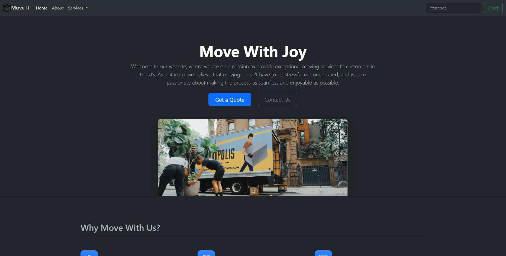
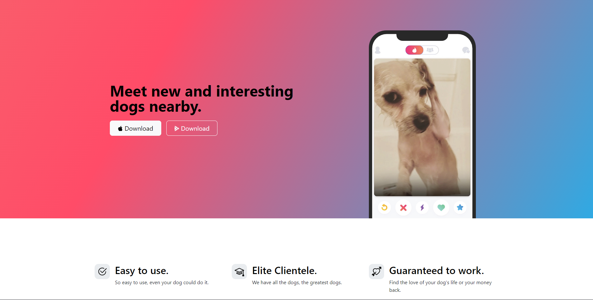

Hello, I'm
Dylan Villanueva
a web developer.
View CSV

Hey there, I'm Dylan, your friendly neighborhood web wizard hailing from the heart of Texas, Fort Worth to be exact! A Texan through and through, I sprouted up in Azle, spent my formative years there, and even got my diploma from Azle High School. At age 29 now, I'm on the lookout for exciting opportunities in the web development realm. Whether it's freelancing or joining a rad team, as long as I'm coding my heart out, you'll find me grinning ear to ear. Now, when I'm not conjuring code, you'll catch me in the throes of various passions. From conquering virtual worlds in gaming, to pounding the pavement on a run, or diving headfirst into the world of languages, I'm always up to something. Plus, let's not forget my knack for crafting eye-popping videos and images. I'm a regular editing maestro!
Move It
Tindog
Let's work together or chat!